Kaggle customer-personality-analysis (CC0), built for clustering, repurposed here for prediction.
Will this customer accept the next marketing campaign?
Only 14.9% say yes, so ranking customers lets the company target.
Main metric F1
BCE · accuracy · precision · recall · ROC-AUC
How much does this customer earn per year?
Income is sensitive and often missing; spend and channel behaviour can estimate it.
Main metric R²
RMSE · MSE · MAE
Every model has a library version (PyTorch / LightGBM) and a from-scratch NumPy twin on the same split.
| Split | n | Yes (1) | No (0) |
|---|---|---|---|
| Full (clf) | 2,236 | 334 (14.94%) | 1,902 (85.06%) |
| Train | 1,788 | 267 (14.93%) | 1,521 (85.07%) |
| Test | 448 | 67 (14.96%) | 381 (85.04%) |
| Income | Full | Test (n=443) |
|---|---|---|
| mean | $51,959 | $53,038 |
| median | $51,371 | $51,948 |
| std | $21,527 | $21,819 |
| min / max | $1,730 / $162,397 | $4,023 / $162,397 |
Bivariate relevance, Random Forest importance and mutual information each cast a vote. 3/3 = full consensus. 2/3 = kept in the models after the V1.2 ablation showed they carry signal.
18 features → 22 input dims (Marital_Status one-hot 5)
13 features → 13 input dims
| Metric | PyTorch | Scratch |
|---|---|---|
| BCE | 0.4028 | 0.4426 |
| accuracy | 0.7991 | 0.7879 |
| precision | 0.4034 | 0.3852 |
| recall | 0.7164 | 0.7015 |
| F1 | 0.5161 | 0.4974 |
| ROC-AUC | 0.8669 | 0.8587 |
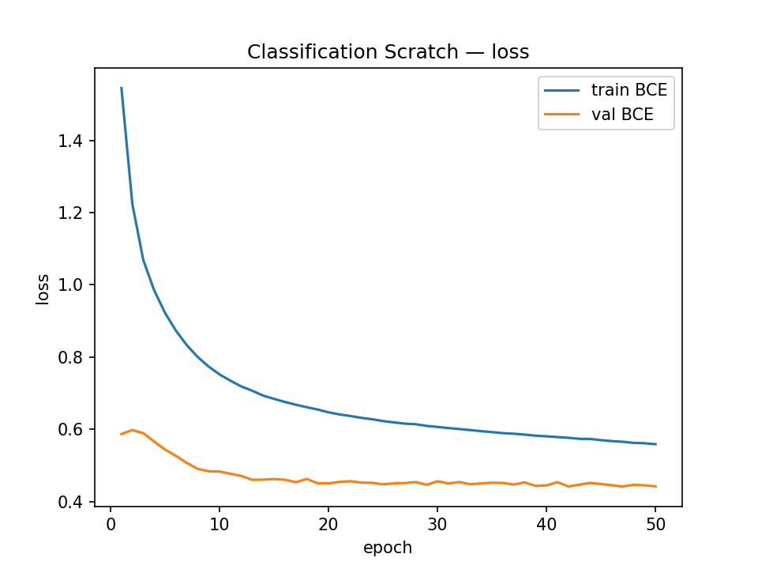
| Metric | PyTorch | Scratch |
|---|---|---|
| MSE | 122,427,718 | 109,479,935 |
| RMSE | $11,065 | $10,463 |
| MAE | $7,068 | $6,543 |
| R² | 0.7423 | 0.7695 |
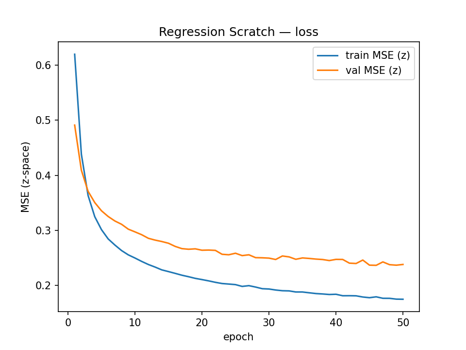
| Metric | PyTorch | Scratch |
|---|---|---|
| BCE | 0.3966 | 0.4121 |
| accuracy | 0.7991 | 0.7946 |
| precision | 0.4122 | 0.3984 |
| recall | 0.8060 | 0.7313 |
| F1 | 0.5455 | 0.5158 |
| ROC-AUC | 0.8818 | 0.8625 |
| Metric | V1.0 | V1.1 | Change |
|---|---|---|---|
| F1 | 0.5161 | 0.5455 | ▲ +0.0294 |
| ROC-AUC | 0.8669 | 0.8818 | ▲ +0.0149 |
| BCE | 0.4028 | 0.3966 | ▼ −0.0062 |
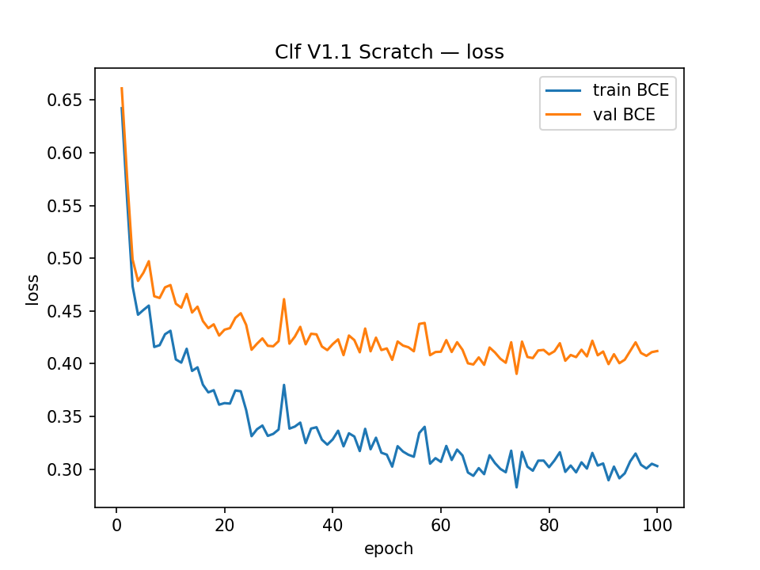
| Metric | PyTorch | Scratch |
|---|---|---|
| MSE | 105,756,669 | 114,236,203 |
| RMSE | $10,284 | $10,688 |
| MAE | $6,524 | $6,643 |
| R² | 0.7774 | 0.7595 |
| Metric | V1.0 | V1.1 | Change |
|---|---|---|---|
| R² | 0.7423 | 0.7774 | ▲ +0.0351 |
| RMSE | $11,065 | $10,284 | ▼ −$781 |
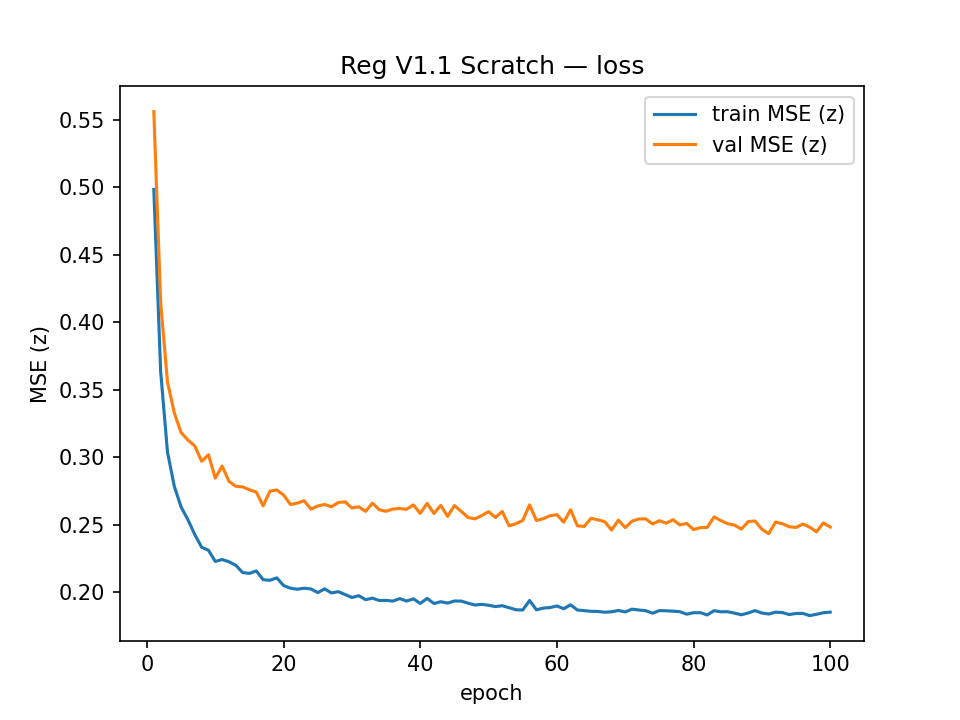
| Metric | PyTorch | Scratch |
|---|---|---|
| BCE | 0.4712 | 0.4471 |
| accuracy | 0.7344 | 0.7478 |
| precision | 0.3289 | 0.3403 |
| recall | 0.7463 | 0.7313 |
| F1 | 0.4566 | 0.4645 |
| ROC-AUC | 0.8452 | 0.8463 |
| Metric | V1.1 | V1.2 | Change |
|---|---|---|---|
| F1 | 0.5455 | 0.4566 | ▼ −0.0889 |
| ROC-AUC | 0.8818 | 0.8452 | ▼ −0.0366 |
| BCE | 0.3966 | 0.4712 | ▲ +0.0746 |
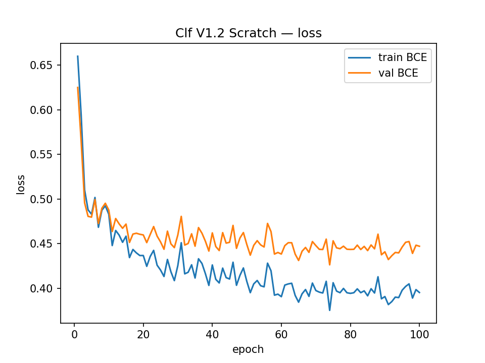
| Metric | PyTorch | Scratch |
|---|---|---|
| MSE | 115,802,913 | 114,663,470 |
| RMSE | $10,761 | $10,708 |
| MAE | $6,983 | $6,936 |
| R² | 0.7562 | 0.7586 |
| Metric | V1.1 | V1.2 | Change |
|---|---|---|---|
| R² | 0.7774 | 0.7562 | ▼ −0.0212 |
| RMSE | $10,284 | $10,761 | ▲ +$477 |
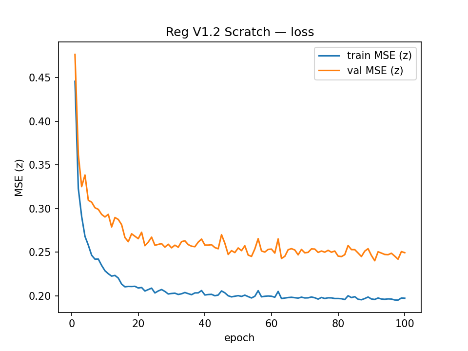
| Part | Original FT-Transformer | Ours (lite) |
|---|---|---|
| Token size | 192 | 32 |
| Blocks | 3 | 2 |
| Attention heads | 8 | 4 |
| Feed-forward layer | 256 hidden, ReGLU | 32 → 64 → 32, ReLU |
| Categorical features | learned embedding table per category | already one-hot, so each is a numeric token |
| Parameters | about 929K (100 numeric features) | 18,625 |
Original settings: Gorishniy et al. 2021, default FT-Transformer config (Table 12).
| Metric | PyTorch | Scratch |
|---|---|---|
| BCE | 0.4007 | 0.4278 |
| accuracy | 0.8594 | 0.8638 |
| precision | 0.5217 | 0.5500 |
| recall | 0.7164 | 0.4925 |
| F1 | 0.6038 | 0.5197 |
| ROC-AUC | 0.8657 | 0.8251 |
| Metric | V1.2 | V2.0 | Change |
|---|---|---|---|
| F1 | 0.4566 | 0.6038 | ▲ +0.1472 |
| ROC-AUC | 0.8452 | 0.8657 | ▲ +0.0205 |
| BCE | 0.4712 | 0.4007 | ▼ −0.0705 |
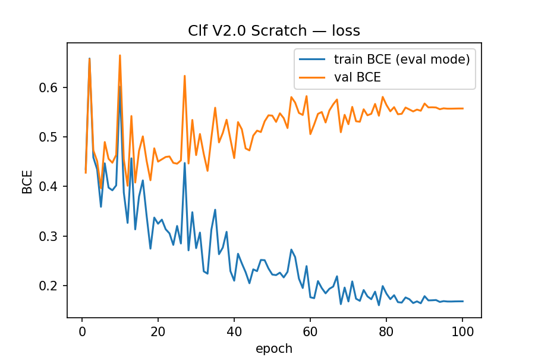
Each feature xi goes only through its own tiny network fi (Linear 1→64 → ReLU → Linear 64→1). Features never mix inside the network.
Prediction is ẑ = b₀ + Σ fi(xi). Because it is a plain sum, each fi can be plotted as that feature's own effect curve, so the model is readable (2,510 parameters).
Income is right-skewed, so the model learns log1p(Income), standardised to a z-score. Large incomes no longer dominate the fit.
Huber (δ=0.5) is squared for small errors and linear for large ones, so a few extreme incomes pull the weights less than they would with MSE.
At prediction time the z-score is undone and expm1 reverses log1p, giving Income in dollars. R² is then computed on dollar predictions.
| Metric | PyTorch | Scratch |
|---|---|---|
| MSE | 131,411,593 | 128,898,525 |
| RMSE | $11,464 | $11,353 |
| MAE | $7,186 | $7,064 |
| R² | 0.7233 | 0.7286 |
| Metric | V1.2 | V2.0 | Change |
|---|---|---|---|
| R² | 0.7562 | 0.7233 | ▼ −0.0329 |
| RMSE | $10,761 | $11,464 | ▲ +$703 |
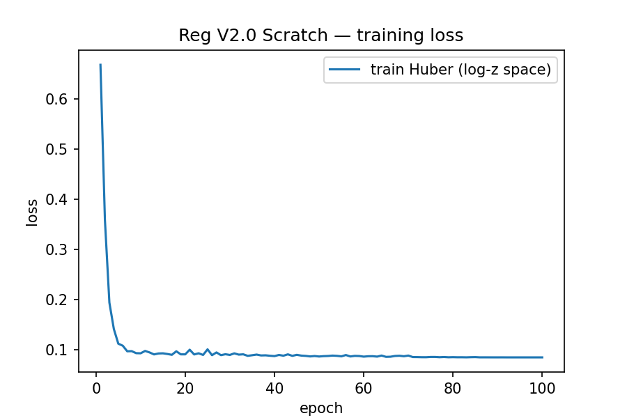
| Metric | LightGBM | Scratch |
|---|---|---|
| BCE | 0.2967 | 0.3757 |
| accuracy | 0.8728 | 0.8504 |
| precision | 0.5658 | 0.0000 |
| recall | 0.6418 | 0.0000 |
| F1 | 0.6014 | 0.0000 |
| ROC-AUC | 0.8898 | 0.8310 |
| Metric | V2.0 | V3.0 | Change |
|---|---|---|---|
| F1 | 0.6038 | 0.6014 | ▼ −0.0024 |
| ROC-AUC | 0.8657 | 0.8898 | ▲ +0.0241 |
| BCE | 0.4007 | 0.2967 | ▼ −0.1040 |
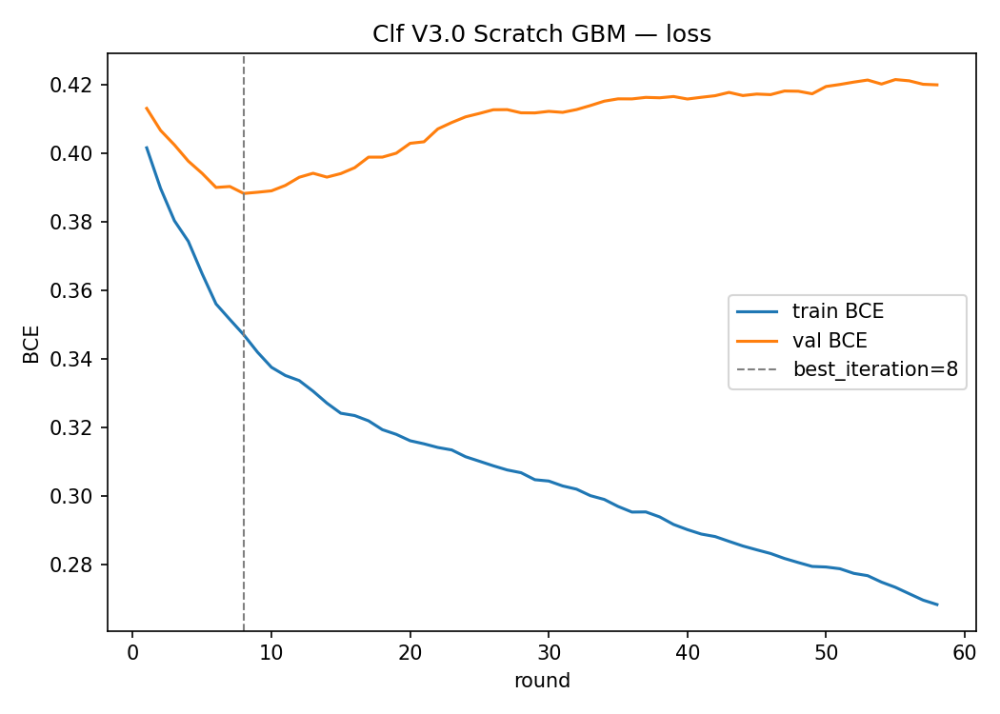
| Metric | LightGBM | Scratch |
|---|---|---|
| MSE | 84,947,282 | 84,877,501 |
| RMSE | $9,217 | $9,213 |
| MAE | $5,758 | $5,905 |
| R² | 0.8212 | 0.8213 |
| Metric | V2.0 | V3.0 | Change |
|---|---|---|---|
| R² | 0.7233 | 0.8212 | ▲ +0.0979 |
| RMSE | $11,464 | $9,217 | ▼ −$2,247 |
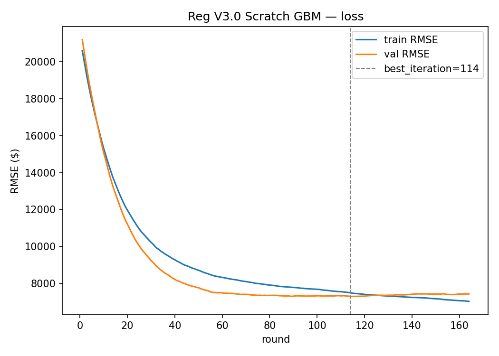
| Metric · 5-fold mean ± std | PyTorch | Scratch |
|---|---|---|
| F1 | 0.5508 ± 0.0191 | 0.5565 ± 0.0335 |
| BCE | 0.3990 ± 0.0368 | 0.4052 ± 0.0429 |
| Metric | V1.1 | V1.3 | Change |
|---|---|---|---|
| F1 | 0.5455 | 0.5508 | ▲ +0.0053 |
| BCE | 0.3966 | 0.3990 | ▲ +0.0024 |
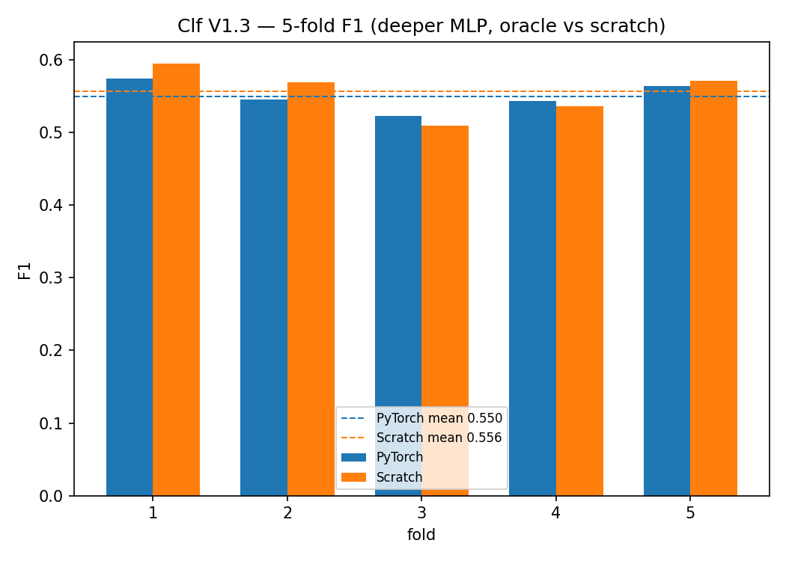
| Metric · 5-fold mean ± std | PyTorch | Scratch |
|---|---|---|
| R² | 0.7553 ± 0.0463 | 0.7573 ± 0.0416 |
| RMSE | $10,603 ± $1,080 | $10,564 ± $967 |
| Metric | V1.1 | V1.3 | Change |
|---|---|---|---|
| R² | 0.7774 | 0.7553 | ▼ −0.0221 |
| RMSE | $10,284 | $10,603 | ▲ +$319 |
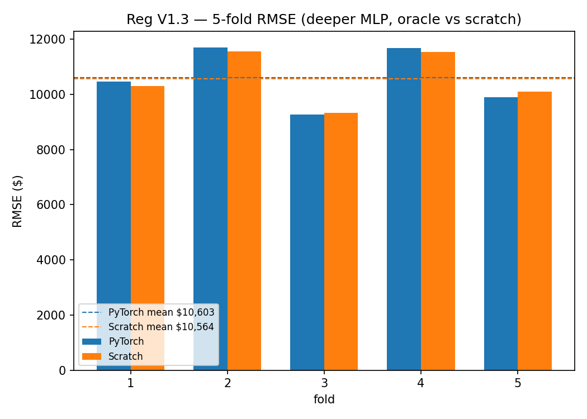
| Part | Original FT-Transformer | Ours (lite) |
|---|---|---|
| Token size | 192 | 32 |
| Blocks | 3 | 2 |
| Attention heads | 8 | 4 |
| Feed-forward layer | 256 hidden, ReGLU | 32 → 64 → 32, ReLU |
| Categorical features | learned embedding table per category | already one-hot, so each is a numeric token |
| Parameters | about 929K (100 numeric features) | 18,625 |
Original settings: Gorishniy et al. 2021, default FT-Transformer config (Table 12).
| Metric · 5-fold mean ± std | PyTorch | Scratch |
|---|---|---|
| F1 | 0.5845 ± 0.0352 | 0.5720 ± 0.0363 |
| BCE | 0.4079 ± 0.0309 | 0.4156 ± 0.0532 |
| Metric | V1.3 | V2.1 | Change |
|---|---|---|---|
| F1 | 0.5508 | 0.5845 | ▲ +0.0337 |
| BCE | 0.3990 | 0.4079 | ▲ +0.0089 |
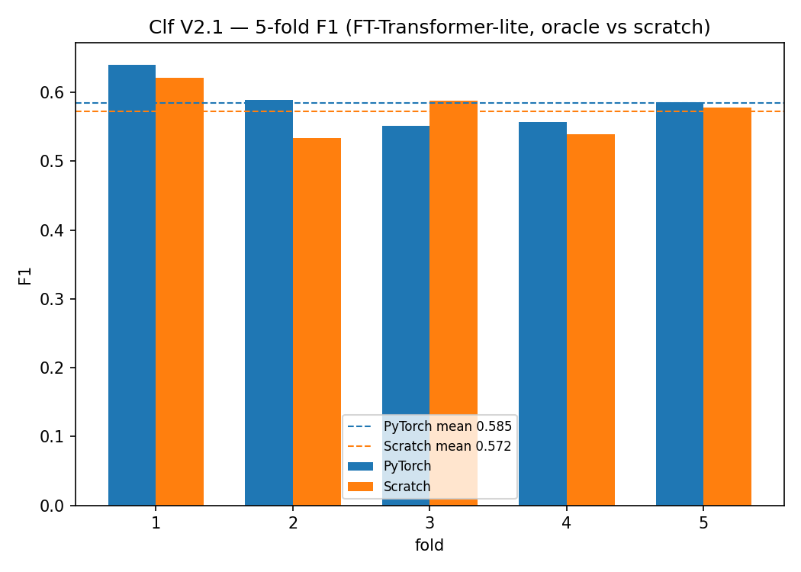
Each feature xi goes only through its own tiny network fi (Linear 1→64 → ReLU → Linear 64→1). Features never mix inside the network.
Prediction is ẑ = b₀ + Σ fi(xi). Because it is a plain sum, each fi can be plotted as that feature's own effect curve, so the model is readable (2,510 parameters).
Income is right-skewed, so the model learns log1p(Income), standardised to a z-score. Large incomes no longer dominate the fit.
Huber (δ=0.5) is squared for small errors and linear for large ones, so a few extreme incomes pull the weights less than they would with MSE.
At prediction time the z-score is undone and expm1 reverses log1p, giving Income in dollars. R² is then computed on dollar predictions.
| Metric · 5-fold mean ± std | PyTorch | Scratch |
|---|---|---|
| R² | 0.7395 ± 0.0375 | 0.7439 ± 0.0333 |
| RMSE | $10,957 ± $939 | $10,867 ± $835 |
| Metric | V1.3 | V2.1 | Change |
|---|---|---|---|
| R² | 0.7553 | 0.7395 | ▼ −0.0158 |
| RMSE | $10,603 | $10,957 | ▲ +$354 |
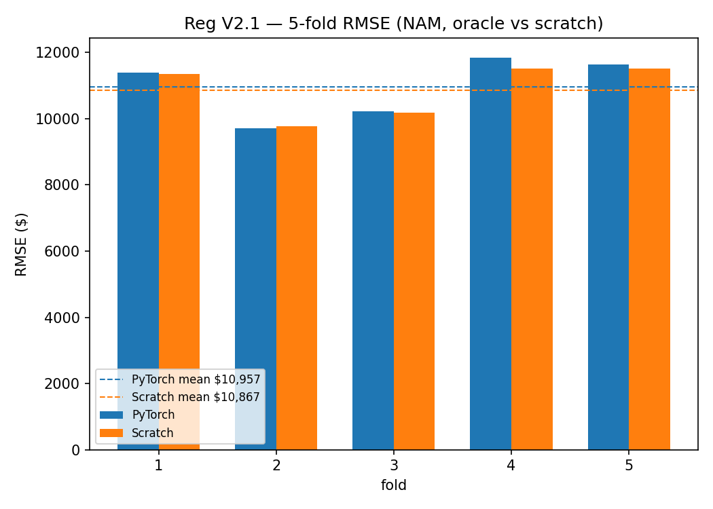
| Metric · 5-fold mean ± std | LightGBM | Scratch |
|---|---|---|
| F1 | 0.5944 ± 0.0447 | 0.5771 ± 0.0509 |
| BCE | 0.2934 ± 0.0324 | 0.2968 ± 0.0343 |
| best_iter | — | 284 ± 52 |
| Metric | V2.1 | V3.1 | Change |
|---|---|---|---|
| F1 | 0.5845 | 0.5944 | ▲ +0.0099 |
| BCE | 0.4079 | 0.2934 | ▼ −0.1145 |
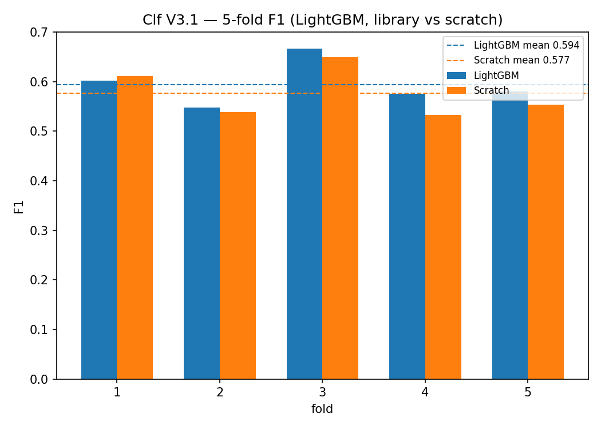
| Metric · 5-fold mean ± std | LightGBM | Scratch |
|---|---|---|
| R² | 0.8260 ± 0.0427 | 0.8234 ± 0.0414 |
| RMSE | $8,915 ± $1,173 | $8,987 ± $1,108 |
| Metric | V2.1 | V3.1 | Change |
|---|---|---|---|
| R² | 0.7395 | 0.8260 | ▲ +0.0865 |
| RMSE | $10,957 | $8,915 | ▼ −$2,042 |
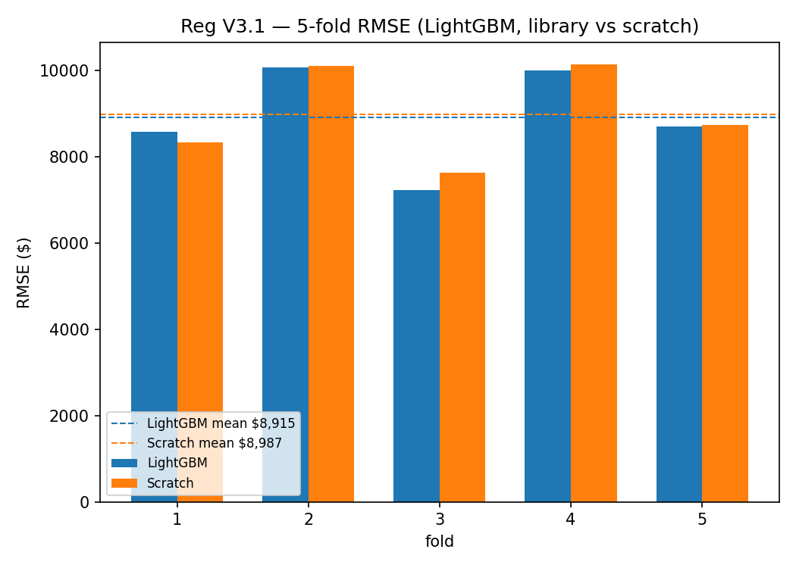
| Version | Single split | 5-fold mean |
|---|---|---|
| V1.0 MLP 1 layer | 0.516 / 0.497 | — |
| V1.1 deeper MLP | 0.546 / 0.516 | 0.551 / 0.557 |
| V1.2 3/3 only | 0.457 / 0.465 | — |
| V2.0 FT-Transformer-lite | 0.604 / 0.520 | 0.585 / 0.572 |
| V3.0 LightGBM / GBM | 0.601 / 0.000 | 0.594 / 0.577 |
Fold std ≈ 0.02–0.05: the three families are within about one standard deviation of each other.
| Version | Single split | 5-fold mean |
|---|---|---|
| V1.0 MLP 1 layer | 0.742 / 0.770 | — |
| V1.1 deeper MLP | 0.777 / 0.760 | 0.755 / 0.757 |
| V1.2 3/3 only | 0.756 / 0.759 | — |
| V2.0 NAM | 0.723 / 0.729 | 0.740 / 0.744 |
| V3.0 LightGBM / GBM | 0.821 / 0.821 | 0.826 / 0.823 |
Best R²: LightGBM 0.826 (5-fold) vs deeper MLP 0.755 and NAM 0.740.